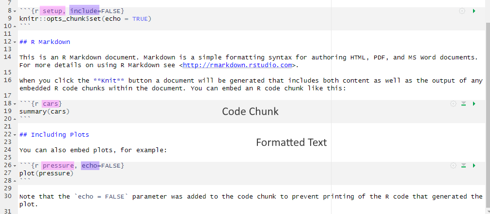
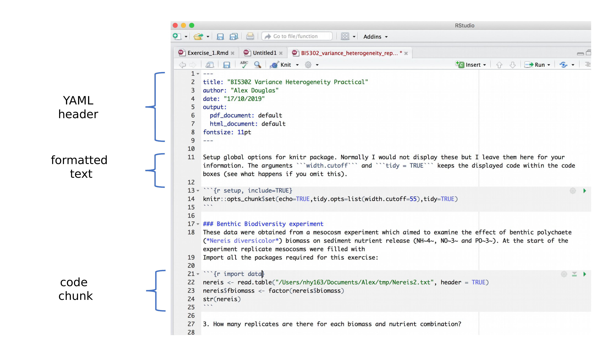
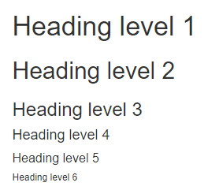
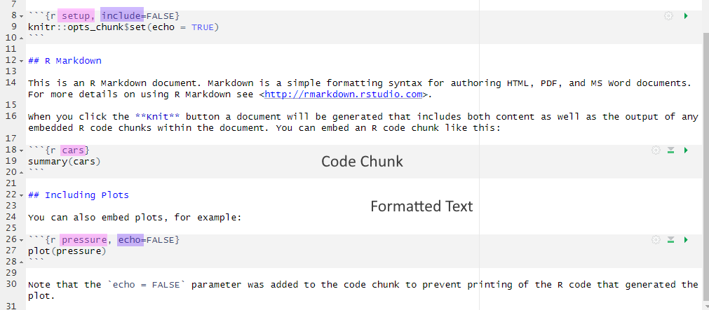
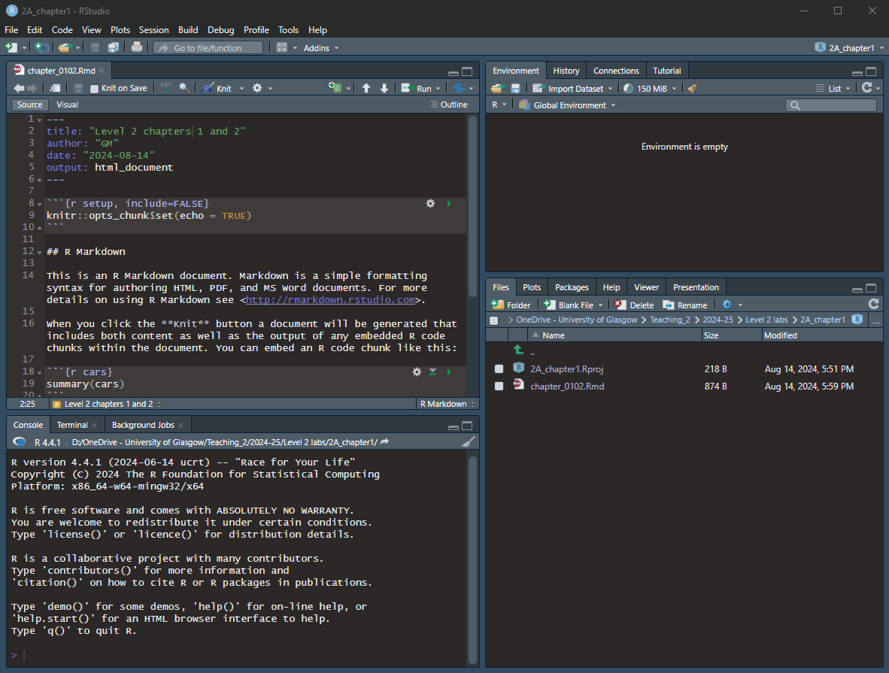

.Rmd with highlighting - names in pink and knitr display options in purple
By the end of this chapter, you should be able to:
Remember, R is a programming language that you will write code in and RStudio is an Integrated Development Environment (IDE) which makes working with R easier as it’s more user friendly. You need both components for this course.
If this is not ringing any bells yet, have a quick browse through the materials from year 1 to refresh your memory.
Use the server only if you are unable to install R and RStudio on your computer (e.g., if you are using a Chromebook) or if you encounter issues while installing R on your own machine. Otherwise, you should install R and RStudio directly on your own computer. R and RStudio are already installed on the R server.
You will find the link to the server on Moodle.
The RSetGo book provides detailed instructions on how to install R and RStudio on your computer. It also includes links to walkthroughs for installing R on different types of computers and operating systems.
If you had R and RStudio installed on your computer last year, we recommend updating to the latest versions. In fact, it’s a good practice to update them at the start of each academic year. Detailed guidance can be found in Appendix B.
Once you have installed or updated R and RStudio, return to this chapter.
By now, you should be aware that the Psychology department at the University of Glasgow places a strong emphasis on reproducibility, open science, and raising awareness about questionable research practices (QRPs) and how to avoid them. Therefore, it’s important that you work in a reproducible manner so that others (and your future self) can understand and check your work. This also makes it easier for you to reuse your work in the future.
Always start with a clear workspace. If your Global Environment contains anything from a previous session, you can’t be certain whether your current code is working as intended or if it’s using objects created earlier.
To ensure a clean and reproducible workflow, there are a few settings you should adjust immediately after installing or updating RStudio. In

R has included rainbow parentheses to help with keeping count on the brackets.
To enable the feature, go to
RStudio has four main panes each in a quadrant of your screen:
If you were not quite sure about one/any of the panes, check out the materials from Level 1. If you want to know more about them, there is the RStudio guide on posit
It’s important to create a new RStudio project whenever you start a new project. This practice makes it easier to work in multiple contexts, such as when analysing different datasets simultaneously. Each RStudio project has its own folder location, workspace, and working directories, which keeps all your data and RMarkdown documents organised in one place.
Last year, you learnt how to create projects on the server, so you already know the steps. If cannot quite recall how that was done, go back to the Level 1 materials.
On your own computer, open RStudio, and complete the following steps in this order:

In case anyone is wondering why my colour scheme in the gif above looks different to yours, I’ve set mine to “Pastel On Dark” in
Don’t ever save a new project inside another project directory. This can cause some hard-to-resolve problems.
Title (e.g., Level 2 chapter 1) - you can also change the title later. Feel free to add your name or GUID in the Author field author name. Keep the Default Output Format as HTML.Rmd opened, you need to save the file.
.Rmd fileRemember, an R Markdown document or .Rmd has “white space” (i.e., the markdown for formatted text) and “grey parts” (i.e., code chunks) in the default colour scheme (see Figure 1.1). R Markdown is a powerful tool for creating dynamic documents because it allows you to integrate code and regular text seamlessly. You can then knit your .Rmd using the knitr package to create a final document as either a webpage (HTML), a PDF, or a Word document (.docx). We’ll only knit to HTML documents in this course.

The markdown space in an .Rmd is ideal for writing notes that explain your code and document your thought process. Use this space to clarify what your code is doing, why certain decisions were made, and any insights or conclusions you have drawn along the way. These notes are invaluable when revisiting your work later, helping you (or others) understand the rationale behind key decisions, such as setting inclusion/exclusion criteria or interpreting the results of assumption tests. Effectively documenting your work in the markdown space enhances both the clarity and reproducibility of your analysis.
The markdown space offers a variety of formatting options to help you organise and present your notes effectively. Here are a few of them that can enhance your documentation:
There is a variety of heading levels to make use of, using the # symbol.
# Heading level 1
## Heading level 2
### Heading level 3
#### Heading level 4
##### Heading level 5
###### Heading level 6

You need a space between the # and the first letter. If the space is missing, the heading will be displayed in the HTML file as …
#Heading 1
You can also include unordered lists and ordered lists. Click on the tabs below to see how they are incorporated
You can add bullet points using either *, - or + and they will turn into:
*)-)+)or use bullet points of different levels using 1 tab key press or 2 spaces (for sub-item 1) or 2 tabs/4 spaces (for sub-sub-item 1):
You need an empty row before your bullet points start. If I delete the empty row before the bullet points, they will be displayed in the HTML as …
Text without the empty row: * bullet point created with * - bullet point created with - + bullet point created with +
Start the line with 1., 2., etc. When you want to include sub-items, either use the tab key twice or add 4 spaces. Same goes for the sub-sub-item: include either 2 tabs (or 4 manual spaces) from the last item or 4 tabs/ 8 spaces from the start of the line.
If you don’t leave enough spaces, the list won’t be recognised, and your output looks like this:
The great thing though is that you don’t need to know your alphabet or number sequences. R markdown will fix that for you
If I type into my .Rmd…
…it will be rendered in the knitted HTML output as…
Yes, they do but you need to label your sub-item lists accordingly. The first label you list in each level is set as the baseline. If they are labelled 1) instead of i) or A., the output will show as follows, but the automatic-item-fixing still works:
Include emphasis to draw attention to keywords in your text:
| R markdown syntax | Displayed in the knitted HTML file |
|---|---|
| **bold text** | bold text |
| *italic text* | italic text |
| ***bold and italic*** | bold and italic |
Other examples can be found in the R Markdown Cheat Sheet
Everything you write inside the code chunks will be interpreted as code and executed by R. Code chunks start with ``` followed by an {r} which specifies the coding language R, some space for code, and ends with ```. If you accidentally delete one of those backticks, your code won’t run and/or your text parts will be interpreted as part of the code chunks or vice versa. This should be evident from the colour change - more white than expected typically indicates missing starting backticks, whilst too much grey/not enough white suggests missing ending backticks. But no need to fret if that happens - just add the missing backticks manually.
You can insert a new code chunk in several ways:
Insert a new code chunk button in the RStudio Toolbar (green icon at the top right corner of the Source pane).Ctrl + Alt + I for Windows or Cmd + Option + I on MacOSX.```{r} and ``` manually
.Rmd with highlighting - names in pink and knitr display options in purpleWithin the curly brackets of a code chunk, you can specify a name for the code chunk (see pink highlighting in Figure 1.1). The chunk name is not necessarily required; however, it is good practice to give each chunk a unique name to support more advanced knitting approaches. It also makes it easier to reference and manage chunks.
Within the curly brackets, you can also place rules and arguments (see purple highlighting in Figure 1.1) to control how your code is executed and what is displayed in your final HTML output. The most common knitr display options include:
| Code | Does code run | Does code show | Do results show |
|---|---|---|---|
| eval=FALSE | NO | YES | NO |
| echo=TRUE (default) | YES | YES | YES |
| echo=FALSE | YES | NO | YES |
| results=‘hide’ | YES | YES | NO |
| include=FALSE | YES | NO | NO |
The table above will be incredibly important for the data skills homework II. When solving error mode items you will need to pay attention to the first one eval = FALSE.
One last thing: In your newly created .Rmd file, delete everything below line 12 (keep the set-up code chunk) and save your .Rmd by clicking on the disc symbol.

The data for chapters 1-3. Download it here: data_ch1.zip. There are 2 csv files contained in a zip folder. One is the data file we are going to use today prp_data_reduced.csv and the other is an Excel file prp_codebook that explains the variables in the data.
The first step is to unzip the zip folder so that the files are placed within the same folder as your project.
Extract All...Unzipping a zip folder
The paper by Pownall et al. was a registered report published in 2023, and the original data can be found on OSF (https://osf.io/5qshg/).
Citation
Pownall, M., Pennington, C. R., Norris, E., Juanchich, M., Smailes, D., Russell, S., Gooch, D., Evans, T. R., Persson, S., Mak, M. H. C., Tzavella, L., Monk, R., Gough, T., Benwell, C. S. Y., Elsherif, M., Farran, E., Gallagher-Mitchell, T., Kendrick, L. T., Bahnmueller, J., . . . Clark, K. (2023). Evaluating the Pedagogical Effectiveness of Study Preregistration in the Undergraduate Dissertation. Advances in Methods and Practices in Psychological Science, 6(4). https://doi.org/10.1177/25152459231202724
Abstract
Research shows that questionable research practices (QRPs) are present in undergraduate final-year dissertation projects. One entry-level Open Science practice proposed to mitigate QRPs is “study preregistration,” through which researchers outline their research questions, design, method, and analysis plans before data collection and/or analysis. In this study, we aimed to empirically test the effectiveness of preregistration as a pedagogic tool in undergraduate dissertations using a quasi-experimental design. A total of 89 UK psychology students were recruited, including students who preregistered their empirical quantitative dissertation (n = 52; experimental group) and students who did not (n = 37; control group). Attitudes toward statistics, acceptance of QRPs, and perceived understanding of Open Science were measured both before and after dissertation completion. Exploratory measures included capability, opportunity, and motivation to engage with preregistration, measured at Time 1 only. This study was conducted as a Registered Report; Stage 1 protocol: https://osf.io/9hjbw (date of in-principle acceptance: September 21, 2021). Study preregistration did not significantly affect attitudes toward statistics or acceptance of QRPs. However, students who preregistered reported greater perceived understanding of Open Science concepts from Time 1 to Time 2 compared with students who did not preregister. Exploratory analyses indicated that students who preregistered reported significantly greater capability, opportunity, and motivation to preregister. Qualitative responses revealed that preregistration was perceived to improve clarity and organization of the dissertation, prevent QRPs, and promote rigor. Disadvantages and barriers included time, perceived rigidity, and need for training. These results contribute to discussions surrounding embedding Open Science principles into research training.
Changes made to the dataset
We made some changes to the dataset for the purpose of increasing difficulty for data wrangling (Chapter 2 and Chapter 3) and data visualisation (Chapter 4 and Chapter 5). This will ensure some “teachable moments”. The changes are as follows:
understanding).Age entries.Ethnicity but introduced a similar but easier-to-solve “messiness pattern” when recoding the understanding data.When you install R and RStudio for the first time (or after an update), most of the packages we will be using won’t be pre-installed. Before you can load new packages like tidyverse, you will need to install them.
If you try to load a package that has not been installed yet, you will receive an error message that looks something like this: Error in library(tidyverse) : there is no package called 'tidyverse'.
To fix this, simply install the package first. In the console, type the command install.packages("tidyverse"). This only needs to be done once after a fresh installation. After that, you will be able to load the tidyverse package into your library whenever you open RStudio.
Never include install.packages() in the Rmd. Only install packages from the console pane or the packages tab of the lower right pane!!!
Note, there will be other packages used in later chapters that will also need to be installed before their first use, so this error is not limited to tidyverse.
The first step is to load in the packages we need and read in the data. Today, we’ll only be using tidyverse, and read_csv() will help us store the data from prp_data_reduced.csv in an object called data_prp.
Copy the code into a code chunk in your .Rmd file and run it. You can either click the green error to run the entire code chunk, or use the shortcut Ctrl + Enter (Windows) or Cmd + Enter (Mac) to run a line of code/ pipe from the Rmd.
── Attaching core tidyverse packages ──────────────────────── tidyverse 2.0.0 ──
✔ dplyr 1.1.4 ✔ readr 2.1.5
✔ forcats 1.0.0 ✔ stringr 1.5.1
✔ ggplot2 3.5.2 ✔ tibble 3.3.0
✔ lubridate 1.9.4 ✔ tidyr 1.3.1
✔ purrr 1.1.0
── Conflicts ────────────────────────────────────────── tidyverse_conflicts() ──
✖ dplyr::filter() masks stats::filter()
✖ dplyr::lag() masks stats::lag()
ℹ Use the conflicted package (<http://conflicted.r-lib.org/>) to force all conflicts to become errors
Rows: 89 Columns: 91
── Column specification ────────────────────────────────────────────────────────
Delimiter: ","
chr (17): Code, Age, Ethnicity, Opptional_mod_1_TEXT, Research_exp_1_TEXT, U...
dbl (74): Gender, Secondyeargrade, Opptional_mod, Research_exp, Plan_prereg,...
ℹ Use `spec()` to retrieve the full column specification for this data.
ℹ Specify the column types or set `show_col_types = FALSE` to quiet this message.Before you start wrangling your data, it is important to understand what kind of data you’re working with and what the format of your dataframe looks like.
As you may have noticed, read_csv() provides a message listing the data types in your dataset and how many columns are of each type. Plus, it shows a few examples columns for each data type.
To obtain more detailed information about your data, you have several options. Click on the individual tabs to see the different options available. Test them out in your own .Rmd file and use whichever method you prefer (but do it).
Some of the output is a bit long because we do have quite a few variables in the data file.
In the Global Environment, click the blue arrow icon next to the object name data_prp. This action will expand the object, revealing details about its columns. The $ symbol is commonly used in Base R to access a specific column within your dataframe.
Con: When you have quite a few variables, not all of them are shown.
Use glimpse() if you want a more detailed overview you can see on your screen. The output will display rows and column numbers, and some examples of the first couple of observations for each variable.
Rows: 89
Columns: 91
$ Code <chr> "Tr10", "Bi07", "SK03", "SM95", …
$ Gender <dbl> 2, 2, 2, 2, 2, 2, 2, 2, 3, 2, 2,…
$ Age <chr> "22", "20", "22", "26", "22", "2…
$ Ethnicity <chr> "White European", "White British…
$ Secondyeargrade <dbl> 2, 3, 1, 2, 2, 2, 2, 2, 1, 1, 1,…
$ Opptional_mod <dbl> 1, 2, 2, 2, 2, 1, 2, 2, 2, 2, 2,…
$ Opptional_mod_1_TEXT <chr> "Research methods in first year"…
$ Research_exp <dbl> 2, 2, 2, 2, 2, 2, 2, 2, 2, 2, 2,…
$ Research_exp_1_TEXT <chr> NA, NA, NA, NA, NA, NA, NA, NA, …
$ Plan_prereg <dbl> 1, 3, 1, 2, 1, 1, 3, 3, 2, 2, 2,…
$ SATS28_1_Affect_Time1 <dbl> 4, 5, 5, 6, 2, 1, 6, 3, 2, 5, 2,…
$ SATS28_2_Affect_Time1 <dbl> 5, 6, 3, 3, 6, 1, 2, 2, 7, 3, 4,…
$ SATS28_3_Affect_Time1 <dbl> 3, 2, 5, 2, 6, 7, 2, 6, 6, 5, 2,…
$ SATS28_4_Affect_Time1 <dbl> 4, 5, 2, 2, 6, 6, 5, 5, 5, 5, 2,…
$ SATS28_5_Affect_Time1 <dbl> 5, 5, 5, 6, 1, 1, 5, 1, 2, 5, 2,…
$ SATS28_6_Affect_Time1 <dbl> 5, 6, 2, 5, 6, 7, 4, 5, 5, 3, 5,…
$ SATS28_7_CognitiveCompetence_Time1 <dbl> 4, 2, 2, 5, 6, 7, 2, 5, 5, 2, 2,…
$ SATS28_8_CognitiveCompetence_Time1 <dbl> 2, 2, 2, 1, 6, 7, 2, 5, 3, 2, 3,…
$ SATS28_9_CognitiveCompetence_Time1 <dbl> 2, 2, 2, 3, 3, 7, 2, 6, 3, 3, 1,…
$ SATS28_10_CognitiveCompetence_Time1 <dbl> 6, 7, 6, 6, 4, 2, 6, 4, 5, 6, 5,…
$ SATS28_11_CognitiveCompetence_Time1 <dbl> 4, 3, 5, 5, 3, 1, 6, 2, 5, 6, 5,…
$ SATS28_12_CognitiveCompetence_Time1 <dbl> 3, 5, 3, 5, 5, 7, 3, 4, 7, 2, 3,…
$ SATS28_13_Value_Time1 <dbl> 1, 1, 2, 1, 3, 7, 1, 2, 1, 2, 4,…
$ SATS28_14_Value_Time1 <dbl> 7, 7, 6, 6, 5, 1, 6, 5, 7, 6, 2,…
$ SATS28_15_Value_Time1 <dbl> 7, 7, 6, 6, 3, 5, 6, 6, 6, 5, 5,…
$ SATS28_16_Value_Time1 <dbl> 2, 1, 3, 2, 6, 5, 3, 7, 2, 2, 2,…
$ SATS28_17_Value_Time1 <dbl> 1, 1, 3, 3, 7, 7, 2, 7, 2, 2, 5,…
$ SATS28_18_Value_Time1 <dbl> 3, 6, 5, 3, 1, 1, 5, 1, 5, 2, 2,…
$ SATS28_19_Value_Time1 <dbl> 3, 3, 3, 3, 7, 7, 4, 5, 3, 5, 6,…
$ SATS28_20_Value_Time1 <dbl> 2, 1, 4, 2, 7, 7, 2, 4, 2, 2, 7,…
$ SATS28_21_Value_Time1 <dbl> 2, 1, 3, 2, 6, 7, 2, 5, 1, 3, 5,…
$ SATS28_22_Difficulty_Time1 <dbl> 3, 2, 5, 3, 2, 1, 4, 2, 2, 5, 3,…
$ SATS28_23_Difficulty_Time1 <dbl> 5, 6, 5, 6, 6, 7, 4, 6, 7, 5, 6,…
$ SATS28_24_Difficulty_Time1 <dbl> 2, 2, 2, 3, 1, 4, 4, 2, 2, 2, 2,…
$ SATS28_25_Difficulty_Time1 <dbl> 6, 7, 5, 5, 6, 7, 5, 6, 5, 5, 5,…
$ SATS28_26_Difficulty_Time1 <dbl> 4, 2, 2, 2, 6, 7, 4, 5, 3, 5, 3,…
$ SATS28_27_Difficulty_Time1 <dbl> 4, 5, 5, 3, 6, 7, 4, 3, 5, 3, 6,…
$ SATS28_28_Difficulty_Time1 <dbl> 1, 7, 5, 5, 6, 6, 5, 4, 4, 4, 2,…
$ QRPs_1_Time1 <dbl> 7, 7, 7, 7, 7, 7, 6, 2, 7, 6, 7,…
$ QRPs_2_Time1 <dbl> 7, 7, 7, 7, 7, 7, 6, 7, 7, 7, 5,…
$ QRPs_3_Time1 <dbl> 5, 2, 6, 2, 6, 4, 6, 3, 7, 3, 3,…
$ QRPs_4_Time1 <dbl> 7, 7, 6, 6, 7, 4, 6, 7, 7, 7, 6,…
$ QRPs_5_Time1 <dbl> 3, 3, 7, 7, 2, 7, 4, 6, 7, 3, 2,…
$ QRPs_6_Time1 <dbl> 4, 7, 6, 5, 7, 4, 4, 5, 7, 6, 5,…
$ QRPs_7_Time1 <dbl> 5, 7, 7, 7, 7, 4, 5, 6, 7, 7, 5,…
$ QRPs_8_Time1 <dbl> 7, 7, 7, 7, 7, 7, 7, 7, 7, 2, 7,…
$ QRPs_9_Time1 <dbl> 6, 7, 7, 4, 7, 7, 3, 7, 6, 6, 2,…
$ QRPs_10_Time1 <dbl> 7, 6, 5, 2, 5, 4, 2, 6, 7, 7, 2,…
$ QRPs_11_Time1 <dbl> 7, 7, 7, 4, 7, 7, 4, 6, 7, 7, 5,…
$ QRPs_12NotQRP_Time1 <dbl> 2, 2, 1, 4, 1, 4, 2, 4, 2, 2, 1,…
$ QRPs_13NotQRP_Time1 <dbl> 1, 1, 1, 1, 1, 4, 2, 4, 1, 1, 1,…
$ QRPs_14NotQRP_Time1 <dbl> 1, 4, 3, 4, 1, 4, 2, 3, 3, 4, 3,…
$ QRPs_15NotQRP_Time1 <dbl> 2, 4, 2, 2, 1, 4, 2, 1, 4, 4, 2,…
$ Understanding_OS_1_Time1 <chr> "2", "2", "6", "2", "6", "Not at…
$ Understanding_OS_2_Time1 <chr> "2", "Not at all confident", "2"…
$ Understanding_OS_3_Time1 <chr> "2", "Not at all confident", "3"…
$ Understanding_OS_4_Time1 <chr> "6", "Not at all confident", "6"…
$ Understanding_OS_5_Time1 <chr> "Entirely confident", "6", "6", …
$ Understanding_OS_6_Time1 <chr> "Entirely confident", "Entirely …
$ Understanding_OS_7_Time1 <chr> "6", "Not at all confident", "2"…
$ Understanding_OS_8_Time1 <chr> "6", "3", "5", "3", "5", "Not at…
$ Understanding_OS_9_Time1 <chr> "Entirely confident", "6", "5", …
$ Understanding_OS_10_Time1 <chr> "Entirely confident", "6", "5", …
$ Understanding_OS_11_Time1 <chr> "Entirely confident", "2", "4", …
$ Understanding_OS_12_Time1 <chr> "Entirely confident", "2", "5", …
$ Pre_reg_group <dbl> 1, 1, 1, 2, 1, 1, 1, 2, 2, 1, 2,…
$ Other_OS_behav_2 <dbl> 1, NA, NA, NA, 1, NA, NA, 1, NA,…
$ Other_OS_behav_4 <dbl> 1, NA, NA, NA, NA, NA, NA, NA, N…
$ Other_OS_behav_5 <dbl> NA, NA, NA, NA, 1, 1, NA, NA, NA…
$ Closely_follow <dbl> 2, 2, 2, NA, 3, 3, 3, NA, NA, 2,…
$ SATS28_Affect_Time2_mean <dbl> 3.500000, 3.166667, 4.833333, 4.…
$ SATS28_CognitiveCompetence_Time2_mean <dbl> 4.166667, 4.666667, 6.166667, 5.…
$ SATS28_Value_Time2_mean <dbl> 3.000000, 6.222222, 6.000000, 4.…
$ SATS28_Difficulty_Time2_mean <dbl> 2.857143, 2.857143, 4.000000, 2.…
$ QRPs_Acceptance_Time2_mean <dbl> 5.636364, 5.454545, 6.272727, 5.…
$ Time2_Understanding_OS <dbl> 5.583333, 3.333333, 5.416667, 4.…
$ Supervisor_1 <dbl> 5, 7, 7, 1, 7, 1, 7, 6, 7, 5, 6,…
$ Supervisor_2 <dbl> 5, 6, 7, 4, 6, 2, 7, 5, 6, 5, 5,…
$ Supervisor_3 <dbl> 6, 7, 7, 1, 7, 1, 7, 5, 6, 6, 7,…
$ Supervisor_4 <dbl> 6, 7, 7, 1, 7, 1, 7, 6, 7, 6, 6,…
$ Supervisor_5 <dbl> 5, 7, 7, 4, 7, 3, 7, 7, 6, 6, 6,…
$ Supervisor_6 <dbl> 5, 7, 7, 4, 6, 3, 7, 6, 7, 6, 6,…
$ Supervisor_7 <dbl> 1, 1, 1, 1, 1, 1, 1, 1, 1, 1, 1,…
$ Supervisor_8 <dbl> 5, 5, 7, 1, 7, 1, 7, 5, 7, 5, 6,…
$ Supervisor_9 <dbl> 6, 7, 7, 4, 7, 3, 7, 5, 7, 6, 7,…
$ Supervisor_10 <dbl> 5, 7, 7, 1, 7, 1, 7, 6, 7, 6, 6,…
$ Supervisor_11 <dbl> NA, 7, 7, NA, 7, 1, 7, 5, 7, 6, …
$ Supervisor_12 <dbl> 4, 5, 7, 1, 4, 1, 7, 3, 6, 6, 5,…
$ Supervisor_13 <dbl> 4, 2, 5, 1, 2, 1, 6, 3, 5, 6, 5,…
$ Supervisor_14 <dbl> 5, 7, 7, 1, 7, 1, 7, 5, 7, 6, 6,…
$ Supervisor_15_R <dbl> 1, 1, 1, 4, 1, 7, 1, 2, 1, 2, 1,…You can also use spec() as suggested in the message above and then it shows you a list of the data type in every single column. But it doesn’t show you the number of rows and columns.
cols(
Code = col_character(),
Gender = col_double(),
Age = col_character(),
Ethnicity = col_character(),
Secondyeargrade = col_double(),
Opptional_mod = col_double(),
Opptional_mod_1_TEXT = col_character(),
Research_exp = col_double(),
Research_exp_1_TEXT = col_character(),
Plan_prereg = col_double(),
SATS28_1_Affect_Time1 = col_double(),
SATS28_2_Affect_Time1 = col_double(),
SATS28_3_Affect_Time1 = col_double(),
SATS28_4_Affect_Time1 = col_double(),
SATS28_5_Affect_Time1 = col_double(),
SATS28_6_Affect_Time1 = col_double(),
SATS28_7_CognitiveCompetence_Time1 = col_double(),
SATS28_8_CognitiveCompetence_Time1 = col_double(),
SATS28_9_CognitiveCompetence_Time1 = col_double(),
SATS28_10_CognitiveCompetence_Time1 = col_double(),
SATS28_11_CognitiveCompetence_Time1 = col_double(),
SATS28_12_CognitiveCompetence_Time1 = col_double(),
SATS28_13_Value_Time1 = col_double(),
SATS28_14_Value_Time1 = col_double(),
SATS28_15_Value_Time1 = col_double(),
SATS28_16_Value_Time1 = col_double(),
SATS28_17_Value_Time1 = col_double(),
SATS28_18_Value_Time1 = col_double(),
SATS28_19_Value_Time1 = col_double(),
SATS28_20_Value_Time1 = col_double(),
SATS28_21_Value_Time1 = col_double(),
SATS28_22_Difficulty_Time1 = col_double(),
SATS28_23_Difficulty_Time1 = col_double(),
SATS28_24_Difficulty_Time1 = col_double(),
SATS28_25_Difficulty_Time1 = col_double(),
SATS28_26_Difficulty_Time1 = col_double(),
SATS28_27_Difficulty_Time1 = col_double(),
SATS28_28_Difficulty_Time1 = col_double(),
QRPs_1_Time1 = col_double(),
QRPs_2_Time1 = col_double(),
QRPs_3_Time1 = col_double(),
QRPs_4_Time1 = col_double(),
QRPs_5_Time1 = col_double(),
QRPs_6_Time1 = col_double(),
QRPs_7_Time1 = col_double(),
QRPs_8_Time1 = col_double(),
QRPs_9_Time1 = col_double(),
QRPs_10_Time1 = col_double(),
QRPs_11_Time1 = col_double(),
QRPs_12NotQRP_Time1 = col_double(),
QRPs_13NotQRP_Time1 = col_double(),
QRPs_14NotQRP_Time1 = col_double(),
QRPs_15NotQRP_Time1 = col_double(),
Understanding_OS_1_Time1 = col_character(),
Understanding_OS_2_Time1 = col_character(),
Understanding_OS_3_Time1 = col_character(),
Understanding_OS_4_Time1 = col_character(),
Understanding_OS_5_Time1 = col_character(),
Understanding_OS_6_Time1 = col_character(),
Understanding_OS_7_Time1 = col_character(),
Understanding_OS_8_Time1 = col_character(),
Understanding_OS_9_Time1 = col_character(),
Understanding_OS_10_Time1 = col_character(),
Understanding_OS_11_Time1 = col_character(),
Understanding_OS_12_Time1 = col_character(),
Pre_reg_group = col_double(),
Other_OS_behav_2 = col_double(),
Other_OS_behav_4 = col_double(),
Other_OS_behav_5 = col_double(),
Closely_follow = col_double(),
SATS28_Affect_Time2_mean = col_double(),
SATS28_CognitiveCompetence_Time2_mean = col_double(),
SATS28_Value_Time2_mean = col_double(),
SATS28_Difficulty_Time2_mean = col_double(),
QRPs_Acceptance_Time2_mean = col_double(),
Time2_Understanding_OS = col_double(),
Supervisor_1 = col_double(),
Supervisor_2 = col_double(),
Supervisor_3 = col_double(),
Supervisor_4 = col_double(),
Supervisor_5 = col_double(),
Supervisor_6 = col_double(),
Supervisor_7 = col_double(),
Supervisor_8 = col_double(),
Supervisor_9 = col_double(),
Supervisor_10 = col_double(),
Supervisor_11 = col_double(),
Supervisor_12 = col_double(),
Supervisor_13 = col_double(),
Supervisor_14 = col_double(),
Supervisor_15_R = col_double()
)In the Global Environment, click on the object name data_prp. This action will open the data in a new tab. Hovering over the column headings with your mouse will also reveal their data type. However, it seems to be a fairly tedious process when you have loads of columns.
One common source of confusion is not seeing all your columns when you open up a data object as a tab. This is because RStudio shows you a maximum of 50 columns at a time. If you have more than 50 columns, navigate with the arrows to see the remaining columns.
Each variable has a data type, such as numeric (numbers), character (text), and logical (TRUE/FALSE values), or a special class of factor. As you have just seen, our data_prp only has character and numeric columns (so far).
Numeric data can be double (dbl) or integer (int). Doubles can have decimal places (e.g., 1.1). Integers are the whole numbers (e.g., 1, 2, -1) and are displayed with the suffix L (e.g., 1L). This is not overly important but might leave you less puzzled the next time you see an L after a number.
Characters (also called “strings”) is anything written between quotation marks. This is usually text, but in special circumstances, a number can be a character if it placed within quotation marks. This can happen when you are recoding variables. It might not be too obvious at the time, but you won’t be able to calculate anything if the number is a character
When the data type is incorrect, you won’t be able to compute anything, despite your numbers being shown as numeric values in the dataframe. The error message tells you exactly what’s wrong with it, i.e., that you have non-numeric arguments.
Logical data (also sometimes called “Boolean” values) are one of two values: TRUE or FALSE (written in uppercase). They become really important when we use filter() or mutate() with conditional statements such as case_when(). More about those in Chapter 3.
Some commonly used logical operators:
| operator | description |
|---|---|
| > | greater than |
| >= | greater than or equal to |
| < | less than |
| <= | less than or equal to |
| == | equal to |
| != | not equal to |
| %in% | TRUE if any element is in the following vector |
A factor is a specific type of integer or character that lets you assign the order of the categories. This becomes useful when you want to display certain categories in “the correct order” either in a dataframe (see arrange) or when plotting (see Chapter 4/ Chapter 5).
You’ve already encountered them in Level 1 but let’s refresh. Variables can be classified as continuous (numbers) or categorical (labels).
Categorical variables are properties you can count. They can be nominal, where the categories don’t have an order (e.g., gender) or ordinal (e.g., Likert scales either with numeric values 1-7 or with character labels such as “agree”, “neither agree nor disagree”, “disagree”). Categorical data may also be factors rather than characters.
Continuous variables are properties you can measure and calculate sums/ means/ etc. They may be rounded to the nearest whole number, but it should make sense to have a value between them. Continuous variables always have a numeric data type (i.e. integer or double).
Knowing your variable and data types will help later on when deciding on an appropriate plot (see Chapter 4 and Chapter 5) or which inferential test to run (Chapter 6 to Chapter 13).
And with this, we are done with the individual walkthrough. Well done :)
Are you ready for some knowledge check questions to test your understanding of the chapter? We also have some faulty codes. See if you can spot what’s wrong with them.
When using the default environment colour settings for RStudio, what colour would the background of a code chunk be in R Markdown?
When using the default environment colour settings for RStudio, what colour would the background of normal text be in R Markdown?
What is the correct way to include a code chunk in RMarkdown that will be executed but neither the code nor its output will be shown in the final HTML document?
Some of these codes have mistakes in them, other code chunks are not quite producing what was aimed for. Your task is to spot anything faulty, explain why the things happened, and perhaps try to fix them.
You want to read in data with the read_csv() function. You have just stated R, created a new .Rmd file, and typed the following code into your code chunk.
However, R gives you an error message: could not find function "read_csv". What could be the reason?
You want to read in data with the read_csv() function. This time, you are certain you have loaded in tidyverse first. The code is as follows:
The error message shows 'data.csv' does not exist in current working directory. You check your folder and it looks like this:
Why is there an error message?
You want to load tidyverse into the library. The code is as follows:
The error message says: Error in library(tidyverse) : there is no package called ‘tidyverse’
Why is there an error message and how can we fix this?
You knitted your .Rmd into a html but the output is not as expected. You see the following:
Why did the file not knit properly?